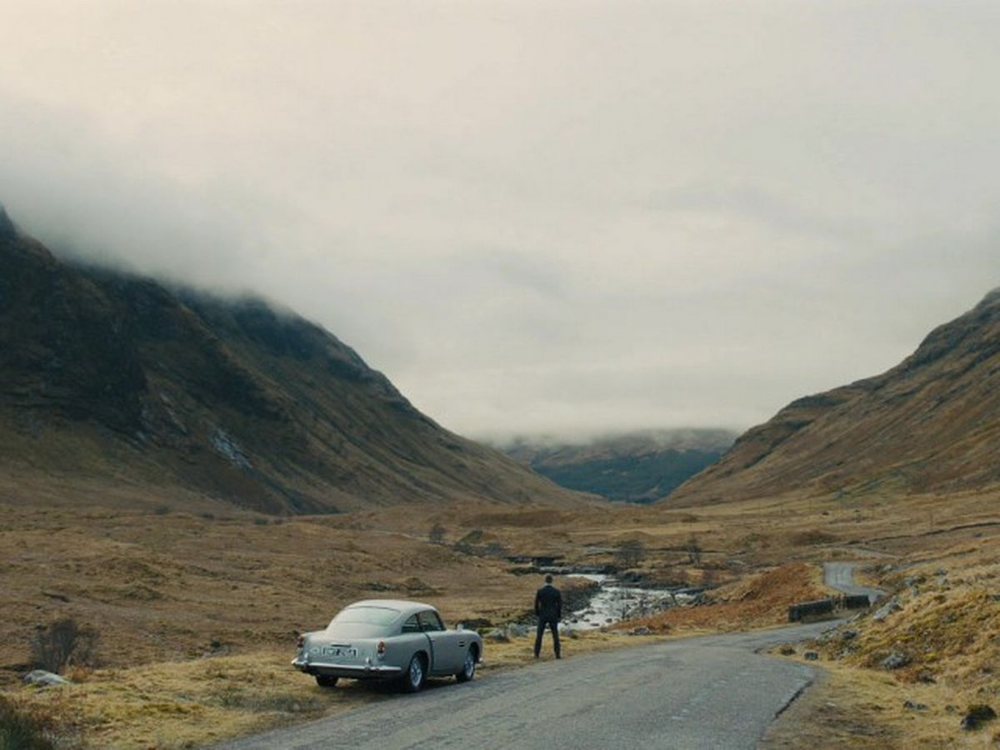

Glen Etive, Skyfall

The spectacular Scottish Highlands location of Glen Etive and the wider Glen Coe area were used as the setting for James Bond's ancestral home in the 2012 film Skyfall. In the film, when 007 and his boss, M, need a safe place to hole up and wait for a fearsome rival, they head to the Bond family estate, Skyfall, set in the breathtaking landscape of Glen Etive.Other movies featuring Scotland's most famous glen include Mel Gibson's Braveheart (1995) and Alfred Hitchcock's The 39 Steps (1935).